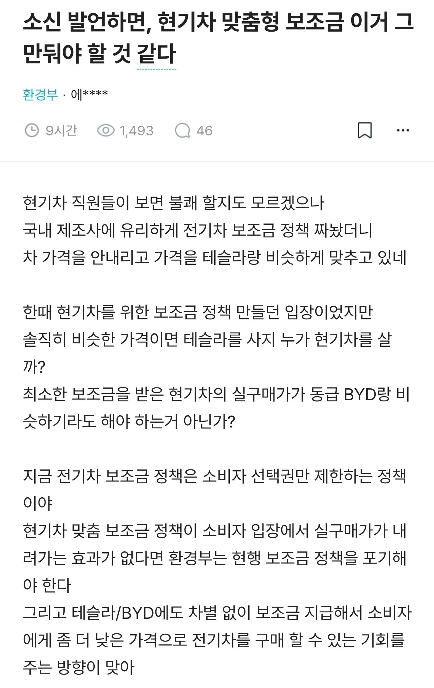
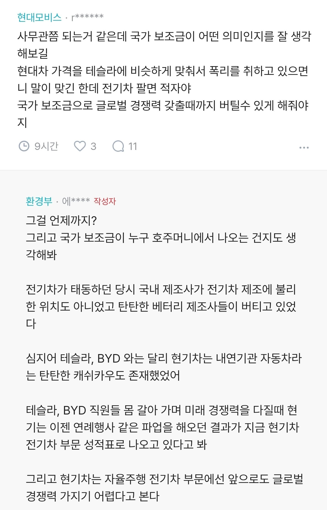

시간이 지나서 이통사 수입이 남으면 반드시 요금을 내릴것입니다 ㅎㅎ.
알고도 또 속아줘야지 신토불이 애국이니까
아니 현기차 망하면 좆되게 만들어놨는데 어카냐 그럼 정부고 현차고 노조고 조금씩 양보를 해야되는데 안되니까 그렇지
보조금해도 모델y보다 비싸면 살 이유가 없긴햐
중국이 기술적으로 많이 따라왔다 이렇게 얘기하는거야 뭐 그럴수 있는데, 중국에 보조금 쏟아붓는 걸 모르고 우리나라는 왜 가격경쟁 안되냐 이런말하는거 보면 빡대가리 아닌가 싶다.
저 말이 사실이라면 환경부 입장에선 저게 맞긴하겠네
쟤들은 전기차의 보급율을 높이는게 주 목적이니깐
국산차든 외제차든 따질건 아닌게 맞지
문제는 대부분이 중국산 전기차로 가다보니까
불과 몇년전만 해도 세금을 왜 중국공산당 지원받는 기업으로 들어가냐 라고 ㅈㄹ해서
지금체계 고친거임
국가보조금 얘기할꺼면 그 세금을 누가 내는지 생각해야지
법인세만 얘기하는 게 아니라 자동차에 납품하는 산업 규모 생각하면
현재 세금 낼 사람들 고용 창출을 어디서 하냐도 생각해야지
현기지원안해주면 나라망함
망하라해 씨발
대한민국 경제 좀먹는 좆대차
세금으로 보조금 넉넉히 주면 현기가 안망함? 매년 파업하면서
당장아이오닉v가 중국에서 2500인데 이거 한국가져오면 이가격에 팔겠냐 즈그 마진낭낭하게 챙기고 보조금으로 즈그들이 생색내겠지 ㅋㅋㅋㅋㅋ
현기차는 내리막이구만 중국차 욕하지만 값싸면 애국심도 타인의 시선도 감내할 수 있지 진짜 요샌 돈없으면 외제차 사야하는 시대인데
지금 있는 고임금 근로자 다 해고하고 싼 근로자로 채우고 평균연봉 중견수준에 맞추면 내가 인정함
그거아니면 보조금 빨아서 생산직 월급 주는 꼴인데
보조금이 원래 자국내 산업보호 목적이잔아
미국도 미국산 전기차만 보조금 줬고(물론 지금은 폐지됐지만)
중국산 전기차에 보조금 가는거 ㅈㄹ해서 국산만 받을수 있도록 고쳤더니
중국산테슬라는 중국산아니다 라는 지성이라도 생겨나나봄
먼 똥싸는소리하는거냐
중국은 중국 내 보조금 기반으로 경쟁력 갖췄는데, 한국은 보조금 없이 경쟁력 갖추는게 힘들긴 하겠지.